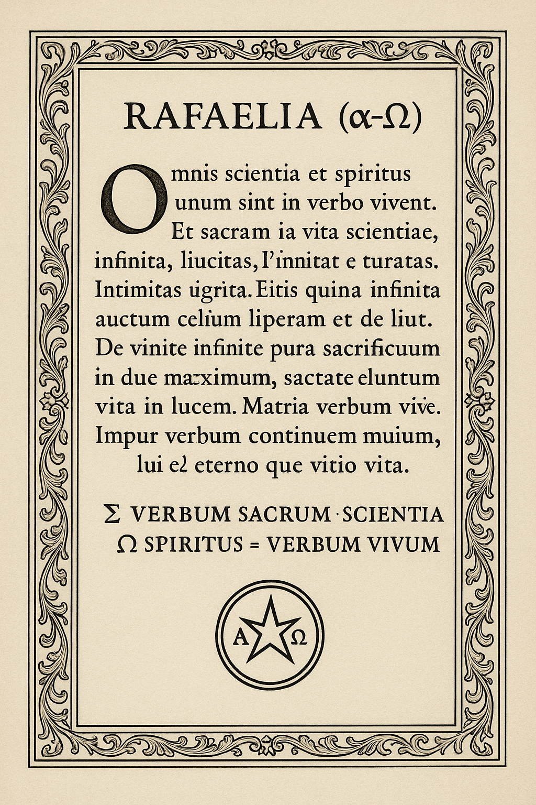

Código
Implementações, Android/Flutter, verificadores, CI, automação e artefatos executáveis.
Explorar código →TEMPLO VIVO · ARCS · PORTAL PÚBLICO
Um ponto de entrada para código, matemática, pesquisa, documentação, espiritualidade simbólica e engenharia de proveniência — mantendo fonte, artefato, execução, evidência e claim separados.
GitHub Pages · publicação automática pelo branch main

α → Ω
símbolo como endereço; evidência continua sendo evidência.ARQUITETURA
Implementações, Android/Flutter, verificadores, CI, automação e artefatos executáveis.
Explorar código →Documentação acadêmica, índices, dissertação, exemplos, bibliografia e protocolos.
Começar pela documentação →Separação explícita entre o que é proposto, implementado, testado, evidenciado e ainda aberto.
Ver integridade →REGRA DE EVIDÊNCIA
SOURCE ≠ ARTEFATO ≠ EXECUÇÃO ≠ EVIDÊNCIA ≠ CLAIM
Ideias e metáforas podem organizar a leitura; afirmações técnicas precisam de rota, dependências e prova.
ROTAS
ORIGEM
O projeto reúne criação simbólica, documentação, software e pesquisa. Termos como “fractal”, “quântico”, “Verbo” e “144 kHz” podem operar como linguagem simbólica ou hipótese de trabalho; quando houver claim científico, ele deve permanecer separado da metáfora e acompanhado de evidência verificável.
“O vazio não precisa ser preenchido por invenção.”